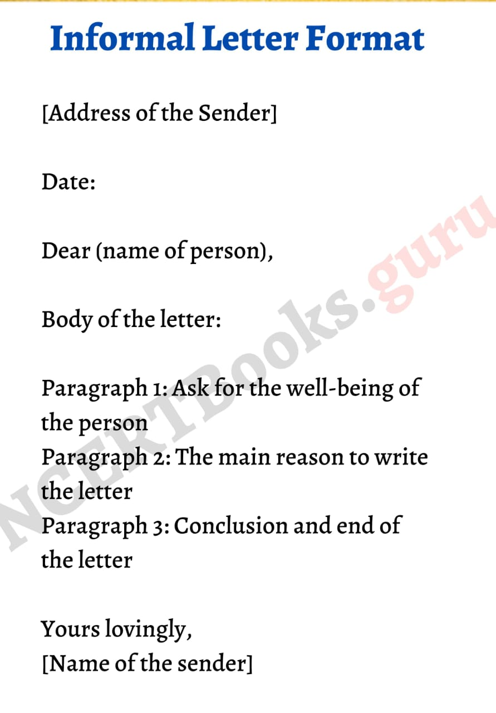
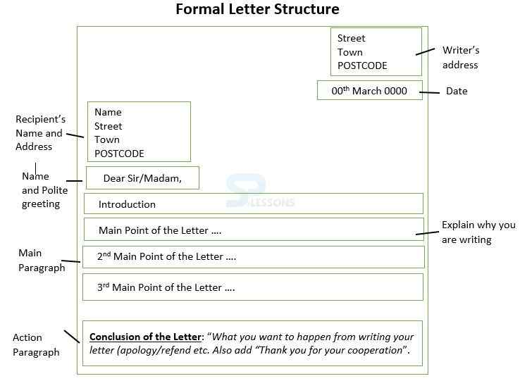

Dear Muskan,
My happiness knew no bounds when I got to know that you have topped your school and achieved your dream. I felt so pleased that I wish I were there to congratulate you personally.
The result has proved that hard work, determination, and perseverance bring good results. You were so laborious and passionate about it. I know you were very nervous too, but I was always very confident that you would come out with flying colors. I apologize that I couldn’t even attend the celebration party despite my wishes.
Hope to see you soon. Please be encouraged and continue your hard work. Your future is very bright. My parents and elder sister have sent lots of love and heartiest congratulations.
With lots of love and best wishes.
Letter Writing
Introduction:
Letter writing has been deemed as one of the most useful forms learnt and used for various reasons. There are several kinds of letters, each of which has its own form and style. However, there are certain parts of the letter which remain the same.
They include:
Sender’s address
Date
Body of the Letter
Subscription
Greeting or Salutation
Signature
Sender’s Address
The writer’s complete postal address has to be mentioned at the beginning of the letter on the left-hand side of the paper. This lets the receiver know where you wrote the letter from.
DateThe date is written just below the sender’s address, and It lets the recipient know when exactly the letter was written. The date may be written in any of the following ways:
- 4th July 2005
- July 4, 2005
- 4/6/2005
- 4-6-2005
- 4-6-2005
The Salutation depends on the relationship between the sender and the receiver.
To members of your family and friends, it could be Dear Father, My Dearest Friend, Dear Uncle, Dear Diana, etc.
To Business people or any officer of higher rank, it could be Dear Sir, Dear Sirs, Sir/Ma’am, etc.
Body of the LetterThe message that you want to convey is stated in the body of the letter. The style, however, depends on the type of letter you are writing. The style of a friendly letter differs completely from that of a business letter or an official letter, but there are certain points that apply to both formal letters and informal letters.
Generally, when you draft the body of your letter, see to that you divide it into short paragraphs, according to the change in the subject matter. Use simple and direct language that is easy to comprehend. Put down all your points in a logical order. Mind your punctuation; incorrect punctuation will alter the meaning of the sentence completely.
SubscriptionThe subscription helps you end the letter in a polite and courteous manner. The subscriptions change according to the type of letter you are writing. It can be written as Yours faithfully, Yours lovingly, Yours sincerely, With love, etc.
SignatureThe signature or the name of the writer should be written just before the subscription.
Different Types of Letters
Letters can be classified into two main types according to the purpose of the letter. Informal Letters, also known as Social Letters, include Friendly Letters and Notes of Invitations

Formal Letters, also known as Business Letters, include Letters of Application, Letters to Higher Authorities, and Letters to Newspapers.
➢ Informal Letter:
Letters to friends and family can be written in a conversational style. They are just a composition of spontaneous thoughts, and they are easy and personal. When writing an informal letter, you are free to use colloquial language, which would be quite out of place in a formal letter. This does not mean that you can pen down random thoughts that are totally disconnected and make no sense. Wrong spelling, punctuation and grammar are not allowed even though the letter is informal and personal.
An informal letter can be written by following a basic format that includes the sender’s address, date, greeting, body of the letter, subscription and signature. To know more about how to write an informal letter, visit Informal Letter Format.
Informal letter Examples
sample 1
B-32, sector-11
Rohini
New Delhi-110034
Rohini
New Delhi-110034
January 10, 2023
Yours lovingly,
Shefali
Shefali
sample 2
B-32, sector-11
Rohini
New Delhi-110085
Rohini
New Delhi-110085
March 15, 2023
Dear Muskan,
How have you been? I hope my letter finds you in best of health and spirits. It has been almost a month since I transferred to the boarding school. I am very happy in my new school. The classes and dormitories are very spacious. There are well equipped science laboratories and a library with a great collection of books. The school has amazing sports facilities such as swimming pool, horse riding track, and archery range.
I believe my life here will be interesting and enjoyable. Although I have made many new friends, I still miss you and the other friends. Please, pay my regards to your parents.
How have you been? I hope my letter finds you in best of health and spirits. It has been almost a month since I transferred to the boarding school. I am very happy in my new school. The classes and dormitories are very spacious. There are well equipped science laboratories and a library with a great collection of books. The school has amazing sports facilities such as swimming pool, horse riding track, and archery range.
I believe my life here will be interesting and enjoyable. Although I have made many new friends, I still miss you and the other friends. Please, pay my regards to your parents.
Yours sincerely,
Aakriti/Abhinav
Aakriti/Abhinav
➢ Formal Letter:
Formal letters or Business letters should be clear and concise. You should always remember that formal letters are written to bring important information into consideration, so you should always take care to draft the letter carefully by providing only the necessary information.
The language used in formal letters is a lot more professional than informal letters. The format of formal letters is the same as explained above, with a few additions, viz., ‘the Receiver’s Address’, ‘Subject’ and ‘Signature’. Check out Formal Letter Writing in English for more information on formal letters.
Formal letter Examples
sample 1
Javed
Read More Book Store
24, Crosby Lane
Bangalore 600045
Read More Book Store
24, Crosby Lane
Bangalore 600045
20th August, 2019
The Manager
Zack Publishing House
Mumbai 400012
Zack Publishing House
Mumbai 400012
Subject: Requirement of new books for the store
Dear Sir,
I have received the books that you sent last week. The books are in perfect condition, and they were delivered on time. Owing to the great service rendered, I would like to order more books that would be a great addition to the wide range of books available at my store. Given below is a list of books that I would like to purchase:
I have received the books that you sent last week. The books are in perfect condition, and they were delivered on time. Owing to the great service rendered, I would like to order more books that would be a great addition to the wide range of books available at my store. Given below is a list of books that I would like to purchase:
| Title of the Book | Author | No. of Copies |
|---|---|---|
| Wuthering Heights | Emily Bronte | 3 |
| Treasure Island | R L Stevenson | 2 |
| A Brief History of Time | Stephen Hawking | 4 |
| Surely You’re Joking, Mr. Feynman! | Richard Feynman | 2 |
I shall be grateful if you could send me copies of these books as mentioned by VPP as early as possible to the address given.
Thank you in advance.
Yours faithfully,
Thank you in advance.
Yours faithfully,
Signature
JAVED
Manager, Read More Book Store
JAVED
Manager, Read More Book Store
sample 2
Ganesh
25, SS Street
Cheran Nagar
Coimbatore 641023
25, SS Street
Cheran Nagar
Coimbatore 641023
8th September, 2019
The Editor
The Hindu
Coimbatore
The Hindu
Coimbatore
Subject: Repair of the road in Cheran Nagar
Sir,
I would like to bring to your notice that the people in and around Cheran Nagar have been facing difficulties in travelling back and forth because of the bad condition of the roads there. We have appealed to the Municipality, but there has not been any response on the issue so far.
As our appeals to their office have had no effect, we believe that perhaps a mention in the media would be of great help. Since the beginning of the last month, the roads in Cheran Nagar have been almost impassable. The surface is badly broken up by the heavy rains, and on a dark night, it is positively dangerous for vehicles to pass that way. Moreover, there are heaps of road metal on both sides of the road, which leave very little room in the middle. The residents of the area have been inco... The situation is becoming worse. There have been multiple accidents happening due to this condition. I request you to highlight the seriousness of the matter in your newspaper so that the road may be properly repaired without further delay.
Thanking You
I would like to bring to your notice that the people in and around Cheran Nagar have been facing difficulties in travelling back and forth because of the bad condition of the roads there. We have appealed to the Municipality, but there has not been any response on the issue so far.
As our appeals to their office have had no effect, we believe that perhaps a mention in the media would be of great help. Since the beginning of the last month, the roads in Cheran Nagar have been almost impassable. The surface is badly broken up by the heavy rains, and on a dark night, it is positively dangerous for vehicles to pass that way. Moreover, there are heaps of road metal on both sides of the road, which leave very little room in the middle. The residents of the area have been inco... The situation is becoming worse. There have been multiple accidents happening due to this condition. I request you to highlight the seriousness of the matter in your newspaper so that the road may be properly repaired without further delay.
Thanking You
Yours sincerely,
Signature
GANESH
Resident
Signature
GANESH
Resident